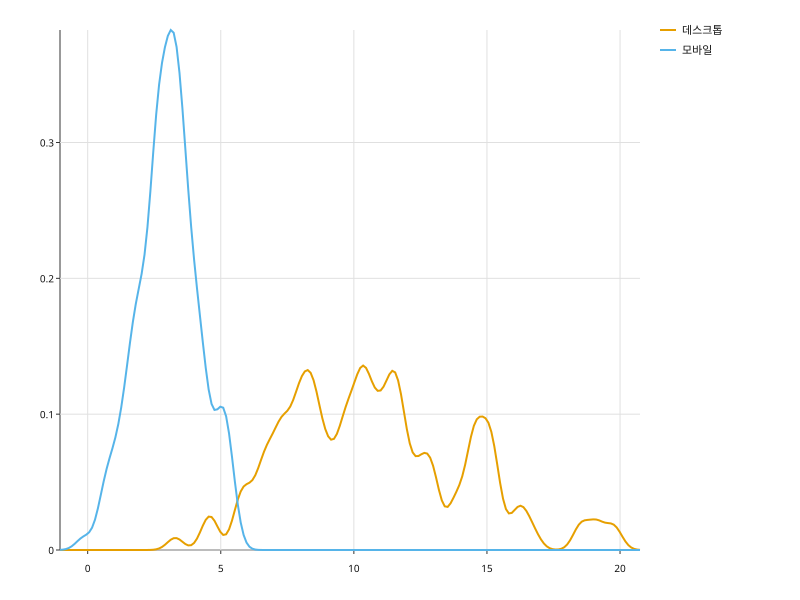

수치 한 컬럼의 분포를 곡선 하나로 추정해 그린다. 히스토그램과 달리 구간 경계가 없다.
import random
import svgplot as sp
_rng = random.Random(5)
SESSION = {
"체류분": (
[round(_rng.gauss(3, 1.0), 2) for _ in range(150)]
+ [round(_rng.gauss(11, 3.5), 2) for _ in range(150)]
),
"기기": ["모바일"] * 150 + ["데스크톱"] * 150,
}sp.kdeplot(SESSION, x="체류분")sp.kdeplot(SESSION, x="체류분", fill=True)sp.kdeplot(SESSION, x="체류분", hue="기기", fill=True)
sp.kdeplot(SESSION, x="체류분", hue="기기", bandwidth=0.3)